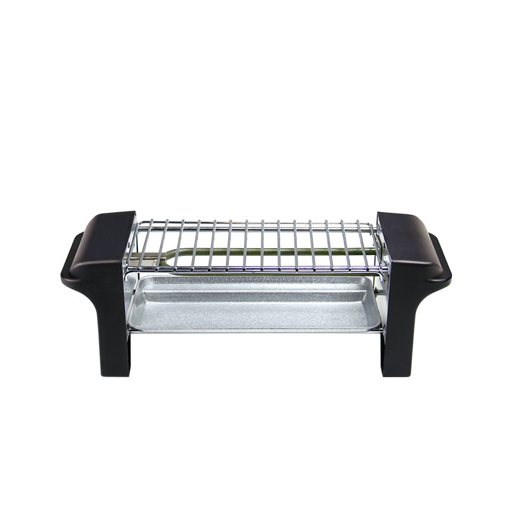
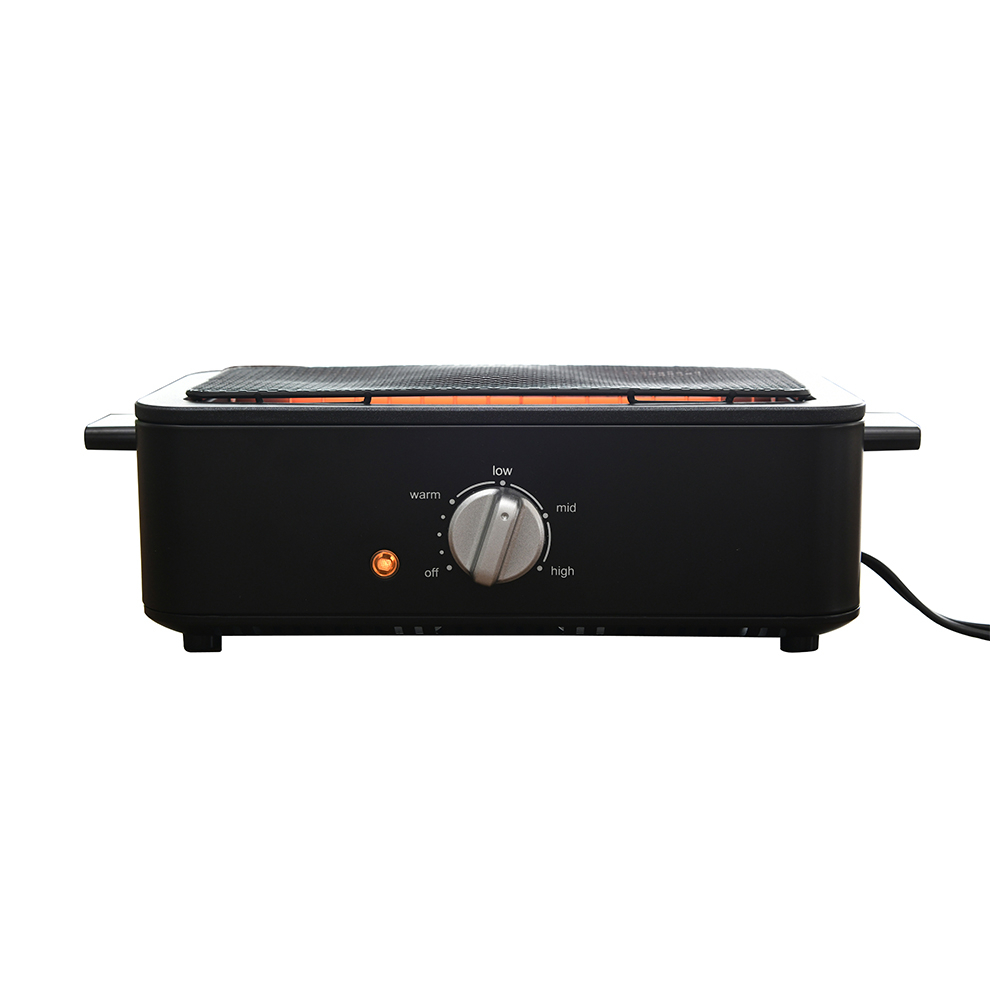
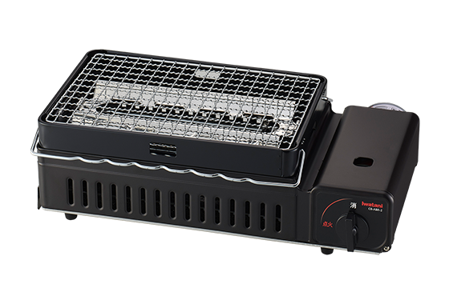

総菜の温め直しを中心に、まず低予算で試したい人向け。
減煙構造、火力調整、洗いやすさのバランスが最も良い。
焼き上がりと食材の幅を優先し、煙対策もできる人向け。
価格だけでは決まらない、5つの違い
実測値ではなく、2026年7月16日時点のメーカー公開仕様に基づく評価です。
| 比較項目 |
価格重視
 LITHON焼き鳥グリル KDGC-002B
|
総合推奨
 山善HITORI-JIME GRILL ESR-Q100
|
火力重視
 イワタニ炙りやII CB-ABR-2
|
|---|---|---|---|
| 参考価格 | 2,480円 | 5,940円 | 約6,300円 |
| 加熱力 | △ 470W 温め直し中心の設計 | ○ 1000W 無段階で火力調整 | ◎ ガス2.3kW 強火〜弱火を調整 |
| 煙・油はね | △ 油受け付き 減煙専用構造の記載なし | ◎ 側面ヒーター 脂が熱源へ落ちにくい | △ 水皿付き 火力分の換気対策が必要 |
| 手入れ | ◎ 網・油受けを丸洗い | ◎ 網・水受けを丸洗い | ○ ホーロー水皿 部品点数は多め |
| 収納性 | ◎ 650g 幅31.5×奥行10.5cm | ○ 1.3kg 幅34.5×奥行14cm | △ 2.4kg 幅40.9×奥行21.4cm |
| 向く使い方 | 総菜串の温め直し 低予算で試す | 一人晩酌 煙と手間を抑える | 生串・海鮮・網焼き 火力を優先する |
| 商品を見る | LITHONをAmazonで見る | 山善をAmazonで見る | 炙りやIIをAmazonで見る |
※価格は公式販売価格または確認時点の実勢価格。Amazonでは変動します※『減煙』は煙が完全に出ないことを意味しません。使用時は換気してください※電気式の消費電力とガス式の最大発熱量は単純な効率比較ではありません※商品画像は各メーカー公式ページで公開されている画像URLを表示しています
結論：平日用は山善、目的が違えば選び分ける
LITHON。2,480円、650gの軽さで、使い続けられるか低予算で試せます。
山善。側面ヒーター、無段階調整、丸洗い対応のバランスを評価しました。
イワタニ。ガス式の火力と串焼き・網焼きの2WAYを優先する人向けです。